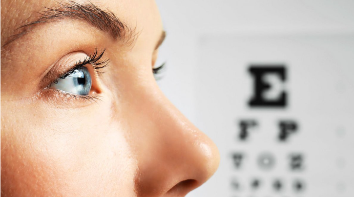

Göz Hastalıkları
Prematür Retinopatisi
Göz içindeki damarlar gelişmeden erken doğan çocuklarda retina tabakasında anormal damar oluşumu
ve fibrozis gelişimi ile karekterize bir durumdur.
Herhangi bir semptomu olmadığından, 32 haftadan önce doğan ve ağırlığı 1500 gr'ın altında olan
bebekler bu konuda tecrübeli bir göz hekimi tarafından muayene edilmelidirler.
Tedavi kapsamında gözlem, lazer, krioterapi veya ameliyat yapılabilmektedir.
Glokom (Göz Tansiyonu)
Göz tansiyonu olarak bilinen glokom hastalığında, göz içindeki sıvı basıncı artarak görme için
gerekli olan göz sinirine zarar vermektedir.
Sıklıkla 40 yaşın üstündeki kişilerde ve genellikle her iki gözde görülen glokom, oldukça yaygın bir
göz hastalığıdır.
Özellikle ileri yaşlarda önemli körlük nedenlerinden birisidir. Glokom bir çok hasta tarafından
ancak ileri dönemde ve belirgin görme kaybı ortaya çıktığında fark edilir.
Görme kaybı oluştuktan sonra geri dönüş olmadığından erken tanı çok önemlidir.
Glokom, 3 farklı tipte görülür:
-
Açık Açılı Glokom: Toplumda en sık görülen glokom tipidir. Erken dönemde hiç
belirti vermez. Sinsi seyirli olup, yıllar içinde yavaş yavaş ilerler.
Hastalık ilerledikçe görme ve görme alanı kayıpları ortaya çıkar, artık bu safhada göz siniri hasarını
geri döndürmek, iyileştirmek mümkün değildir.
-
Kapalı Açılı Glokom:Bazı kişilerde göz sıvısını boşaltan kanalların bulunduğu açı
bölgesi yapısal olarak dardır.
Bazı nedenlerle açı ve kanallar tamamen kapanarak göz tansiyonu aniden çok yükselir. Bu durumda çok
şiddetli göz ağrısı hissedilir, bulantı-kusma olabilir.
Göz kızarır, görme azalır. Hastalar ışıkların çevresinde haleler, gökkuşağı gibi
renkler görürler. "Akut Glokom Krizi" denilen bu durumda acilen göz doktoruna
başvurulmalı,tedavi geciktirilirse görme kaybedilir.
-
Konjenital (Doğuştan) Glokom:Doğuştan itibaren vardır. Bebeklerde göz çeperi
esnek olduğu için göz içi basıncının artması gözlerde büyümeye neden olur.
Bulanıklaşma, ışığa karşı hassasiyet ve sulanma diğer belirtilerdir. Gözlerinde sulanma olan
bebeklerde daha çok gözyaşı kanalının tıkanıklığı söz konusu olsa da bu bebeklerin glokom
yönünden de incelenmeleri gerekir.
Göz Tembelliği (Amblyopi)
Çocukluğun erken döneminde görülür. Bir göz iyi
görürken, diğerinin aynı seviyede görmemesi durumunda az gören göze “amblyopik” denir.
Genellikle tek gözde görülür. Erken tanı önemlidir. Bu nedenle ailelerin çocuklarını takip etmeleri
ve göz muayenesi ihmal edilmemelidir.
Katarakt
Katarakt, gözdeki doğal merceğin saydamlığını kaybetmesidir. Halk dilinde “perde” veya
“aksu” diye de adlandırılır. Katarakt, göz merceğinde oluşan bulanık ya da kesif bölgelerdir.
Saydamlığı bozulan lens isli, buzlu veya lekeli cam gibi olur ve görme ile ilgili şikayetler başlar.
Cisimler şekilsiz bulanık veya zayıf görülür. Göz yorgunluğu ve baş ağrısı oluşur.
Gözdeki bu değişimlerin, kalıcı görüş kaybı riski taşıdığı unutulmamalıdır.
Tıbbi tedavi ilaç, göz damlası, egzersiz ya da gözlükle katarakt yok edilemez. Tedavi, cerrahi yöntemle
gözdeki kataraktlı lensin saydam göz içi lensi ile değiştirilmesidir.
Görme bozukluğu, kişinin günlük yaşamını aksatacak kadar ileri seviyedeyse, katarakt ameliyatla
alınmalıdır. Doğumsal kataraktlarda ise, görmenin engellendiği her durumda vakit kaybetmeden ameliyat
yapılmalıdır.
Kırma Kusurları
Gözde kırma kusurları, 3 tipte görülür:
-
Miyopi:Çeşitli nedenlerle ışınların retinanın önünde odaklanması halidir.
Miyopi, gözlerin yakındaki cisimleri net olarak görmesi ama uzaktaki cisimleri net olarak
görememesidir.
Miyop kişiler, uzağı daha iyi görebilmek için gözlerini kısarlar. Miyopi, genellikle kalıtımsaldır.
Gözleri az ışıkta kullanma ya da beslenme yetersizliği de miyopiye yol açabilir.
Genellikle 8-12 yaş grubunda başlamakla birlikte 20’li yaşlarda oluşan yetişkin tipi miyopi de vardır.
-
Hipermetropi: Yakını görememe durumu olarak bilinir. Hipermetrop kişilerde göz
küresi, genellikle normalden daha kısadır. Bu nedenle göz merceğinin yakındaki cisimlerden gelen
ışınları retina üzerinde odaklaştırması güçleşir. Bunun yanı sıra, korneanın düzlüğü veya göz
merceğinin inceliği hipermetropi nedeni olabilir.
Hipermetrop çocuklar, genellikle hem uzağı hem yakını iyi görürler. Çünkü göz merceğinin
odaklama yeteneği, gözün kısalığını karşılamaya yetecek kadar kuvvetlidir. Hipermetropi çocuklarda
şaşılıkla birlikte görülebilir. Çocuklarda baş ağrıları ve okumaya karşı ilgisizlik gibi görme dışı
belirtiler, hipermetropinin işareti olabilir.
-
Astigmatizma: Genellikle korneanın düzensizliği ya da çarpıklığı nedeniyle oluşur.
Normal görme için korneanın düzgün ve her yönde eşit eğimde olması gerekirken,
astigmatizmada korneanın eğimi, bir yönde daha fazladır. Kalıtımsaldır ve genellikle hayat boyu
değişmeden kalır.
Retinal Yırtık ve Retina Dekolmanı
Gözün içerisinde görmeyi algılayan sinir tabakası olan retina, normalde gözün iç duvarına yapışık
vaziyettedir. Gözün arka boşluğunu dolduran, jel kıvamındaki vitreus ise retina tabakası ile
zayıf bir yapışıklık gösterir. Yaşlanma veya bir takım hastalıklar neticesinde vitreus içerisinde bozulmalar olur ve retina
tabakasından ayrılmaya başlar. Ayrılma esnasında hasta tarafından
“ışık çakmaları” algılanabilir. Bu ayrılma esnasında bazen retinada yırtık gelişir. Hasta bu aşamada “kurum yağması”, “göz önünde karaltılar” algılayabilir. Retinadaki bu yırtık yerinden retinanın
arkasına geçen sıvı retinayı göz duvarından ayırmaya başlar. Buna “yırtıklı retina dekolmanı” denir. Miyoplar, ailesinde retina dekolman öyküsü olan, katarakt ameliyatı geçiren, öbür gözünde
retina dekolmanı olan kişilerde risk daha fazladır. Daha az oranda görülen yırtıksız retina dekolmanında ise, neden göz içinde oluşmuş olan zarların kontrakte olarak retinayı göz içine
doğru çekmesi (traksiyonel) veya retina altında sıvı birikmesi (seröz) olabilir.
Retina dekolmanı geliştiğinde görmede kısmi ya da tam kayıp olabilir. Retina dekolmanı gelişmeden
önce yırtık ya da retina yırtığa neden olabilecek incelme ve bozulma alanları saptandığında
bu bölgenin çevresine lazer veya dondurma (krioterapi) işlemi uygulanır. Burada amaç yırtığın etrafındaki
retina tabakasının göz duvarına daha sıkı yapışmasını sağlayarak retina dekolmanı gelişimini önlemektir.
Retina dekolmanı geliştiğinde mümkün olan en kısa süre içerisinde cerrahi tedavi gerekir. Ameliyatın
geciktirilmesi, başarı şansını azaltır. Ameliyatta gözün durumuna göre, gözün dış duvarına
silikon bantlar yerleştirilmesi, gözün içine gaz enjeksiyonu (pnömatik retinopeksi) veya vitrektomi
yöntemleri kullanılabilir. Ameliyat sonrası görmenin düzelmesi uzun vakit alabilir, düzelme tam olmayabilir.
Dekolmanın tam düzelmediği hastalarda tekrar operasyon gereksinimi olabilir.
Diabetik Retiopati
Diyabet hastalığına bağlı olarak gelişen “diyabetik retinopati”, 20-65 yaşları arasındaki görme kaybının başlıca nedenidir. Tedavi edilmediği taktirde körlük riski, şeker hastası olmayanlara
göre 25 kat daha fazladır. Retina tabakasındaki problemlerin ana nedeni şeker hastalığına bağlı olarak retina damarlarındaki bozulmalardır. Bu bozulmalar neticesinde hastalığın erken
evresinde retina tabakasında mikroanevrizmalar (ufak damar baloncukları), kanamalar, ödem (su toplanması), eksuda (damardan sızıntı nedeniyle birikintiler) görülürken daha ileri evrelerde
sinir tabakasına oksijen gidememesi (iskemi), göziçinde yeni damarların ve zarların oluşması tablosu ile karşılaşılır. Hastalığın son evresinde bu yeni damarlardan göz içine kanamalar, zarların
retina tabakasını göz duvarından ayırması (retina dekolmanı) gibi daha ciddi sonuçlarla körlük gelişir. Bu yüzden bu hastalarda erken teşhis ile uygun takip ve tedavi çok önemlidir. Diyabet hastaları,
ilk tanı aldıkları zaman mutlaka bir göz hekimi tarafından muayene edilmeli ve bir yıldan daha uzun ara vermemek kaydıyla doktorunun önerdiği sıklıklarla kontrollerine devam etmelidirler.
Üveit
Gözün damar tabakasında oluşan inflamasyona “üveit” denir. Tedaviden sonra da zaman zaman tekrarlayabilir.
Gözün ön bölümünde oluşan “iridosiklit” denilen iltihaplar tedaviye erken ve iyi cevap verir.
Gözün arka kısmındaki iltihaplara ise “arka üveit” denir ve ciddi kalıcı görme kayıplarına yol açabilir. Üveit hastalığına yol açan nedenler çoğu vakada tespit edilememektedir. Bazı vakalarda ise beraberinde
romatizmal ya da enfeksiyöz bir hastalık bulunabilmektedir. Bu hastalıkların arasında; sifiliz, tüberküloz, bruselloz, herpes, ve AIDS gibi enfeksiyöz hastalıklar, kollajen doku ve otoimmün kaynaklı olarak
tanımlanan sistemik hastalıklar (Behçet hastalığı, sarkoidoz, ankilozan spondilit, romatoid artrit vb) eşliğinde de üveit görülebilir. Üveit; gözde kızarıklık, ışığa bakamama, bulanık görme veya görmede azalma,
göz çevresinde ağrı, uçuşmalar şeklinde belirti verir. Hastalık merkezi bölgede ise, daha çok görme azalması şeklinde bulgu verir.
Presbiyo (Yaşlı Göz)
Yaşlılığa bağlı olarak kişilerde yakındaki nesneleri görme güçleşebilir. Bu durum, “presbiyopi (yaşlı göz)” olarak adlandırılır. Genellikle okuma gözlükleriyle düzeltilir, bir tedavisi yoktur.
Sarı Nokta Hastalığı
Gözün arkasında bulunan sinir tabakası makula (sarı nokta) merkezi, net bir şekilde görmeyi ve okuma, araç sürme vb. aktivitelerin gerçekleştirilmesini sağlar. Makula yeterli çalışmadığında
görme alanının merkezinde bulanık fark edilir. Okuma esnasında sayfada kelimeler flulaşır ve düz çizgiler bozulmuş gibi görülür. Sarı nokta hastalığı (makula dejeneresansı), yaşa bağlı olarak
ortaya çıkan ve genellikle 60 yaş üstü grupta sıklıkla karşılaşılan yaygın bir göz hastalığıdır.
Şaşılık
Şaşılık (göz kayması), gözlerin farklı yönlere bakması durumudur. Genellikle çocuklarda görülür, ancak erişkinlerde de gelişebilir. Şaşılıkta yalnızca bir gözde kayma olabilir ya da gözler değişerek
bakışlar kayabilir. Gözlerde kayma olduğunda, beyinde iki farklı görüntü algısı oluşacağından, görmede derinlik hissinde ve her iki gözle sağlanan görüşte azalmaya yol açacaktır. Yetişkinlerde ise
çift görme şikayeti dikkati çeker.
Özellikle ailesinde şaşılık veya göz tembelliği olan çocuklar ile 4. aydan itibaren gözlerinde kayma fark edilen bebekler için mutlaka uzman bir göz hekimine başvurulması gerekir. Bunun yanı sıra
her çocukta 3 yaşından itibaren rutin göz muayeneleri ihmal edilmemelidir.
Göz Kapakları Bozuklukları
Oküloplastik cerrahi; göz kapakları, gözyaşı yolları ve orbita (göz çukuru) hastalıklarıyla ilgilenen tıbbi branştır. Göz kapağı içe dönüklükleri (entropiyum), dışa dönüklükleri (ektropiyum), göz kapağı
düşüklükleri (ptozis), kirpiklerin içeri dönmesi, doğuştan ya da sonradan oluşan gözyaşı
kanalı tıkanıklıklarının açılması, göz tümörü ameliyatları ve kapak spazmı ile ilgili tanı
ve tedavi çalışmalarını kapsamaktadır.
Genellikle kalıtsal faktörlerle birlikte yaşlanma nedeniyle oluşan göz kapağı sarkmalarının
düzeltilmesi için yapılan cerrahi girişimler, “blefaroplasti” olarak adlandırılır.
Göz kapağı düşüklüğü (ptozis), üst gözkapağı seviyesinin normalden aşağıda olmasıdır. Göz kapağı düşüklüğü (ptozis); doğumsal, darbe sonrasında, göz ameliyatları sonrasında ya da ilerleyen
yaşlarda kas zayıflığı gibi nedenlere bağlı oluşabilir. Doğuştan olanlarda göz kapağını kaldırmak için askı kullanmak gerekir. İleri yaşta oluşan ptoz durumlarında, cerrahi olarak göz kapağını kaldıran
kası kısaltmak ve güçlendirmek hedeflenir.
Kirpiklerin içe dönmesi, gözün yüzeysel tabakalarında çizilme, batma, yaşarma, ağrı gibi belirtilere, ileri durumlarda ise korneada yara oluşmasına ve görme kaybına neden olabilir.
Bu durumda cerrahi olarak kapak ve kirpikler dışarı çevrilerek düzeltilmelidir.
Yüz felci durumunda ya da “entropiyum” denilen alt göz kapağının dışa dönmesi durumunda göz dış etmenlere açık hale gelir ve öncelikle kuruma, daha sonra da enfeksiyon oluşur.
Yaşarma, batma, yanma gibi belirtiler oluşabilir. Cerrahi girişimle tekrar normal kapak pozisyonu sağlanmaktadır.
Göz kapaklarının istemsiz sıkılması (blefarospazm), göz kapaklarını kapatan kasların kişinin iradesi dışında aşırı biçimde kasılması durumudur. Genellikle 40 yaşından sonra ortaya çıkar.
Tedavi için öncelikle göz kapağına ve çevresine belirli noktalara botoks enjekte edilir ve göz kapağı kaslarının aşırı kasılması önlenir. İlacın etki süresi, genellikle 4-6 aydır.
Belirli aralıklarla tedavinin tekrar edilmesi gerekebilir.
Gözlerde ağrı, bulanık görme, ışığa duyarlılık, uçuşan cisimler görme gibi belirtiler ciddi göz hastalıklarına işaret olabilir.
Diyabet, hipertansiyon, romatizma gibi hastalıklar gözlerde ciddi hasarlara sebep olabilir. Hastanemizde, göz hastalıkları tanı ve tedavisi detaylı olarak gerçekleştirilmektedir.
Tedavisi yapılan hastalıklardan bazıları;
- Katarakt
- Glokom (Göz Tansiyonu)
- Göz Tembelliği
- Şaşılık
- Retina Hastalıkları
- Diyabete bağlı göz hastalıkları
- Oküloplasti
- Kornea Hastalıkları
- Nörooftalmoloji